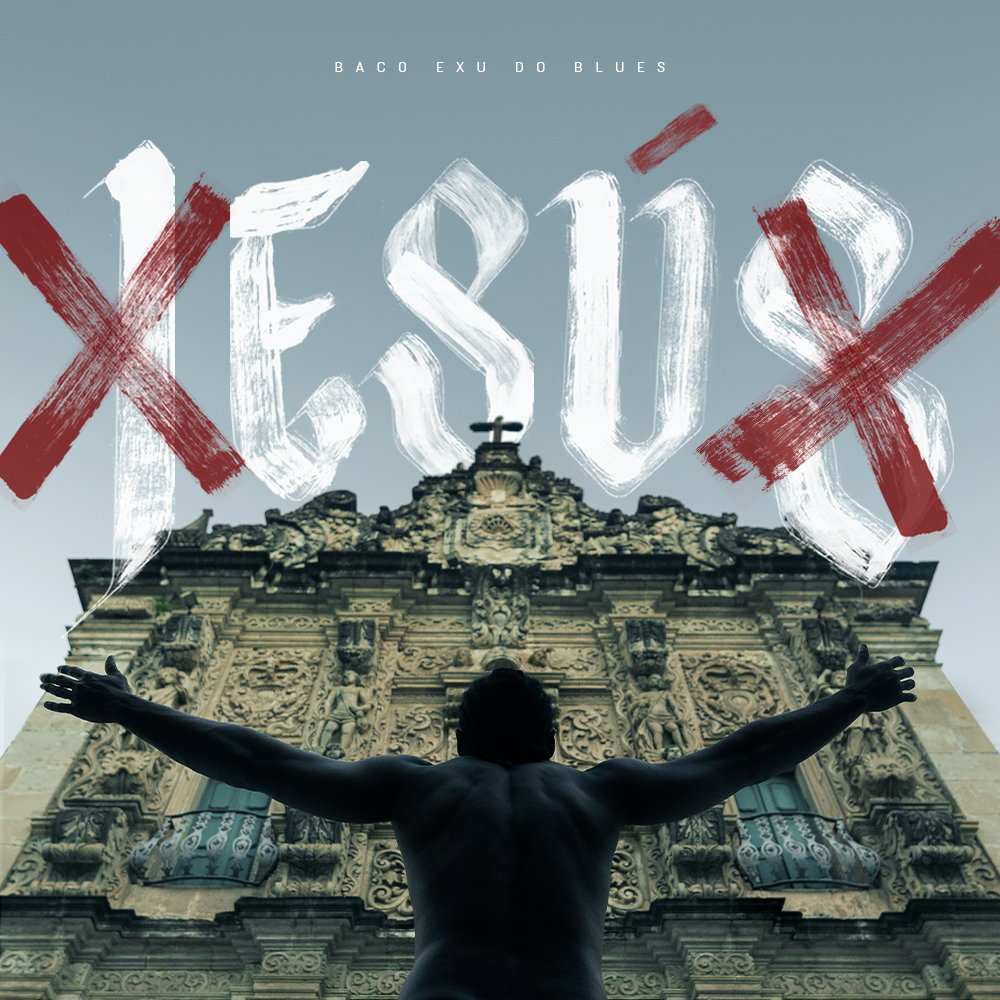
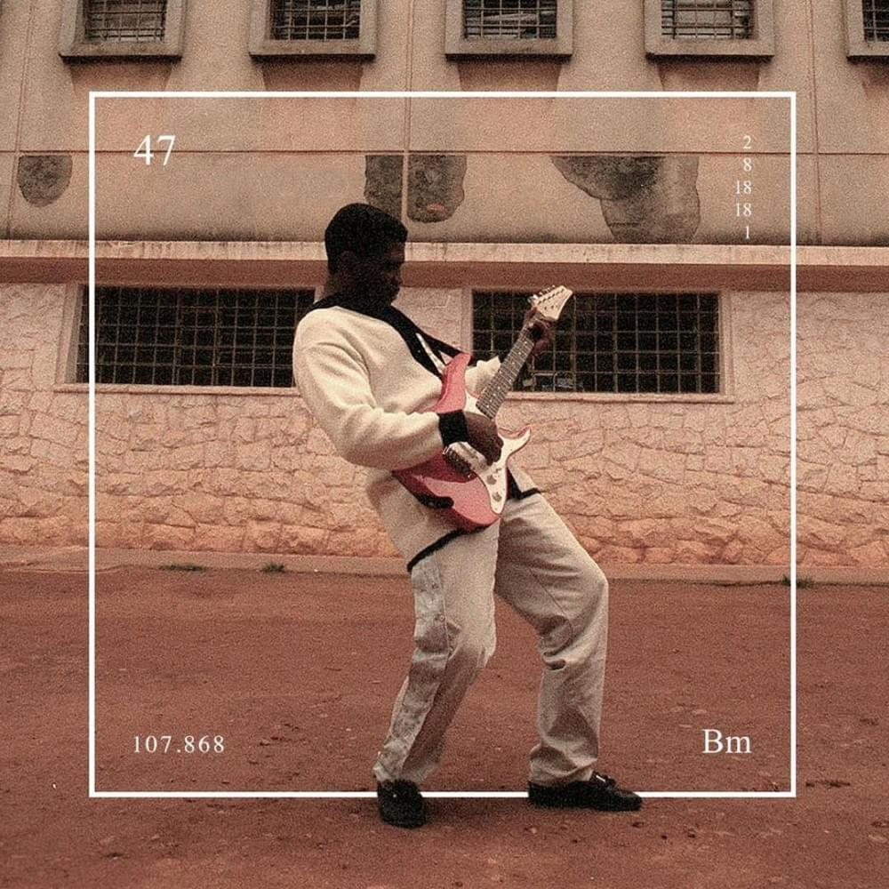

Baco
Diogo Álvaro Ferreira Moncorvo, mais conhecido como Baco Exu do Blues é um cantor e compositor brasileiro, conhecido por ser um dos maiores rappers da música contemporânea. Baco começou a ganhar popularidade após o lançamento da faixa Sulicídio, composta em 2016 com o rapper Diomedes Chinaski, em que ambos fazem críticas aos cenário nacional do rap, concentrado nos estados do Rio de Janeiro e São Paulo, reivindicando mais visibilidade para a produção musical de outros estados brasileiros. Dentre as principais características de Baco estão suas fortes metáforas com letras cruas e poéticas, que falam sobre amor, sexo, poder, religião e sociedade. Em 2017, Baco Exu do Blues foi laureado como Artista Revelação pelo Prêmio Multishow de Música Brasileira. Na ocasião, o artista também teve a sua canção "Te Amo Disgraça" eleita a Canção do Ano pelos juris.
Sua Carreira
Baco Exu do Blues diferenciou-se dos rappers que o
antecederam por encontrar terreno fértil para compreender
os porquês do racismo, do machismo, da homofobia. Eu sou dos
poucos que não escondem o que sentem, canta em Bluesman.
"Quando você fala de racismo, fala de masculinidade tóxica de
uma forma visceral. Ela destrói você de diversas formas, nos
seus relacionamentos. Eu chutaria que a masculinidade tóxica,
para o homem negro, é páreo a páreo com os motivos de
depressão, juntamente com o racismo. Por ter depressão e por
ter depressão dentro de um relacionamento, fui entendendo isso
pouco a pouco, e como me atingia."
Eis outro diferencial do jovem artista: ele gosta de falar
abertamente sobre suas dificuldades psicológicas. "Eu vejo
como uma parte da minha vida. A depressão é tipo um amigo que
você não tem certeza se é seu amigo. Você pensa: esse cara
pode me passar a perna qualquer dia, mas é aquela pessoa que
é muito próxima e, se passar a perna em você, vai te derrubar
de verdade. É uma coisa que me faz escrever muito. Quando
tenho minhas crises, meu Deus do céu, viro o poeta maior do
mundo". O encadeamento lógico leva a outras conclusões de
grande monta: "Todo jovem negro sofre racismo quando é criança.
Se teve um gatilho para a depressão, muito provavelmente a
gente já sabe qual foi o motivo desse gatilho." Toda pessoa
negra sofre de depressão, ele acredita.
Esú 
Um ano após ganhar destaque nacional com a faixa "Sulicídio",
o MC soteropolitano Baco Exu do Blues, lança seu primeiro
disco, intitulado "Esú", projeto que contará com duas partes.
Com 10 faixas e produção musical feita por TAS, no Cremenow
Studio, a criação dos beats ficou à cargo de Nansy Silvvz,
exceto a faixa Intro, que tem a base feita por Scooby Mauricio
e scratches de KL Jay, do Racionais.
"Esú" traz a história de um personagem em transição, que
passa por diversas provações, da depressão ao gozo. Autoestima,
individualidade, onipotência, luxúria, sincretismo e
empoderamento negro, são temas recorrentes no álbum. "Metade
homem, metade Deus e os dois sentem medo de mim", cita Baco
na faixa que leva o título da obra, mostrando o encontro da
fragilidade divina e a força humana.
YouTube
Bluesman 
Produzido pelo próprio Baco, o álbum alinha nove músicas no
repertório autoral. O disco foi formatado com beats de
Portugal, DKVPZ e JLZ. "Bluesman" tem participações de Tim
Bernardes, da cantora 1lum4 (Ilume) e do Tuyo, trio curitibano de afrofolk.
Sobre a capa, Baco diz: "Essa foto é uma das imagens mais
libertadoras que eu já vi. O ser BLUESMAN é não ser o que os
outros esperam, é não se enquadrar em rótulos ou estereótipos,
e essa foto do João Wainer de um negro dentro do Carandiru,
um dos maiores presídios que o Brasil já teve, representa isso!
Com todo esse peso, a foto só exala arte e isso é BLUESMAN
PRA C******!!!".
YouTube